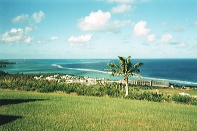

31.Dec.98
(07:00-c) ZL-TV 02:15- 45.250 -- 9M-TV 03:15- 48.240 --30.Dec.98
(10:00-b) 9M-TV 00:10 48.24/25/26 - V73SIX 01:45 50.014 CW Beacon29.Dec.98
(09:00-a) ZL-TV 01:20 45.250 VK-TV 01:20 46.172/240 -- 9M-TV 01:20 48.24/25/26 - V73SIX 06:20 50.014 CW Beacon V63AO 06:21 50.120 SSB V73AT 06:31 50.140 SSB28.Dec.98
(09:00-a) ZL-TV 02:00 45.250 VK-TV 02:30 46.240 V73SIX 05:34 50.014 CW Beacon 9M-TV 07:00 48.24/25/26 --27.Dec.98
(14:00-c) ZL-TV 02:00 45.24/25/26 -- VK-TV 02:00 46.240 -- 9M-TV 02:00 48.24/260 -- BY-TV 02:00 49.750 -- VK3DQJ 02:00 50.110/135 SSB ZL2TPY 02:05 50.110 SSB ZL2KT 02:08 50.110 SSB VK3DUT 02:11 50.110 SSB VK3ATQ 02:16 50.110/140 SSB VK3EK 02:22 50.140 SSB VK7IK/3 02:25 50.125 SSB26.Dec.98
(14:00-b) 9M-TV 05:00 48.24/25/26 - VR2YTK 05:10 50.130 SSB VR2ZA 05:11 50.130 SSB VR2XMT 05:12 50.120 SSB VR2MM 05:14 50.140/148 SSB VR2IL 05:24 50.120 SSB VR98JK 05:35 50.100 CW VR2ZST 05:36 50.130 SSB VR2MQ 05:37 50.130 SSB 9M2NK 06:34 50.107 CW 9M2TO 06:45 50.117 CW HL1LTC 08:43 50.110 CW23.Dec.-25.Dec.98
◎[KH2K/AH0 Saipan運用] 12月23日から25日までの3日間、KH2K/AH0運用のためこのコーナーの更新は休止しました。22.Dec.98
(06:00-a) ZL-TV 01:00- 45.24/25/26 -- VK-TV 02:20- 46.172/240 --21.Dec.98
(09:00-b) VK-TV 23:45- 46.172/240 -- ZL-TV 01:20- 45.24/25/260-- 9M-TV 01:40- 48.24/260 -- BY-TV 05:00- 49.750 --20.Dec.98
(08:00-a) ZL-TV 01:30- 45.24/25/26 -- VK-TV 06:00- 46.172 --19.Dec.98
(07:00-a) ZL-TV 00:30 45.24/25/26 -- VK-TV 00:30 46.172/240 -- VK2FHN 02:20 50.110 SSB VK2SS 02:22 50.110 SSB VK1VP 02:23 50.135 SSB 9M-TV 04:00- 48.24/25/26 -- BY-TV 04:30- 49.750 -- 9M2NK 06:40 50.107 CW RST 52918.Dec.98
(07:00-a) ZL4TBN 05:46 50.150 SSB (JA2→ZL2AGI/ZL3TIC.JA6→ZL3ADT) VK7IK/3 06:00 50.145 SSB (JA5→VK3XQ)17.Dec.98
(12:00-b) ZL-TV 00:45- 45.24/250 -- 9M-TV 03:55- 48.24/260 --14.Dec.98
(10:00-d) ZL-TV 00:40- 45.250 -- ZL2KT 06:10 50.140 SSB (ZL2AGI 06:16 50.110 SSB JA4) YC1MH 07:34 50.110 SSB VR2ZDH 08:36 50.110/150 SSB VR98LC 08:48 50.130 SSB13.Dec.98
(08:00-b) ZL-TV 01:30- 45.250 -- VK-TV 04:00- 46.172/240 -- 9M-TV 05:50- 48.24/25/260- YC0CBI 06:58 50.110 SSB YC1MH 07:04 50.115 SSB YC1DYY 07:22 50.120 SSB *YC0CBI 07:48 50.110 SSB12.Dec.98
(08:00-b) ZL-TV 01:45- 45.24/250 -- 9M-TV 02:45- 48.24/260 -- BY-TV 02:45- 49.750 -- BV2DP 04:45 50.110 SSB 9M6GY 06:18 50.110 CW VK8AH 07:16 50.110/120 SSB QSO with YB0ARA/911.Dec.98
(12:00-b) ZL-TV 01:15- 45.250 9M-TV 07:00- 48.24/25/260-10.Dec.98
(11:00-a)09.Dec.98
(13:30-d) HL1LTC 12:58 50.110 CW/SSB08.Dec.98
(13:00-b) ZL-TV 01:20- 45.24/25/260- 9M-TV 04:30- 48.24/25/260- YC1MH 07:58 50.110 SSB07.Dec.98
(13:00-c) 9M-TV 04:30- 48.24/25/260- V73AT 04:50 50.110 CW XZ1N 06:20 50.110 CW/SSB (YC1MH 07:22 50.110 SSB)06.Dec.98
(11:00-b) VK2BA 22:55 50.110 SSB V73AT 22:56 50.110 SSB VK2APG 22:58 50.140 SSB VK7RAE 23:07 50.057 CW Beacon VK3AJJ 23:08 50.092 CW VK3DQJ 23:09 50.125 SSB VK3AMK 23:10 50.133 SSB VK4DMI 23:12 50.110 SSB VK4GPS 23:13 50.105/100 CW VK4JSR 23:15 50.115 SSB VK3BWT 23:17 50.170 SSB VK3AJJ 23:40 50.092 CW VK1ZQR 23:47 50.180 SSB VK2DN 23:56 50.140 SSB *VK3AJJ 00:03 50.120 SSB VK3YY 00:14 50.120/140 SSB *VK3DQJ 05:00 50.125 SSB VK8VF 05:04 50.056 CW Beacon YC1MH 05:19 50.115 SSB YF1OO 05:50 50.110 CW VK8MS 05:54 50.110/135 SSB *VK3AMK 06:00 50.102 CW VK8AH 06:13 50.110 SSB N7ET/DU7 06:28 50.110/104 CW/SSB YF1OO 06:43 50.107 CW DU100GF 08:06 50.115 SSB05.Dec.98
(12:00-b) *VK3/VK7's 23:40-00:25 VK3AMK.3BDL.3BWT.3HY.3KIR.3KAI.3XQ VK7GUN.7RAE(B) ZL-TV 02:40- 45.24/25/260- VK-TV 03:20- 46.240 -- 9M-TV 04:30- 48.24/25/260- YC1MH 07:21 50.110/140 SSB VK8MS 07:28 50.110/140 SSB HL1LTC 07:38 50.110 SSB VK8AH 07:38 50.110 SSB YF1OO 07:48 50.119 SSB YB0CRT 08:04 50.110 SSB YB0CBI 08:12 50.110/115 SSB VK8VF 08:15 50.056 CW Beacon WH7C/DU3 08:29 50.150 SSB/CW OP & QSL JG1OUT04.Dec.98
(08:00-b) ZL-TV 00:00- 45.24/25/260- 9M-TV 01:00- 48.24/25/260- ZL3TY 01:57 50.110 CW ZL3TIC 02:00 50.110 SSB ZL2AQR 02:35 50.130 SSB ZL-TV 02:40 50.750 FM TV Audio S9++ 9M-TV 06:50- 48.24/25/260-03.Dec.98
(13:00-g) ZL-TV 00:45- 45.24/25/260- 9M-TV 03:00- 48.25/260 -- V73AT 05:12 50.110 CW V73SIX 05:13- 50.014 CW Beacon ZL-TV 05:20- 50.740 FM TV Audio ZL2TPY 05:45 50.110 SSB *ZL2TPY 05:55 50.107 CW/SSB ZL2KT 06:10 50.140 SSB (ZL2AGI 06:11 50.140 SSB JA2)02.Dec.98
(06:00-a) 9M-TV 00:15- 48.24/25/26 - ZL-TV 03:00- 45.24/25/26 - VK-TV 03:30- 46.172/240 --01.Dec.98
(07:00-b) VK-TV 02:30- 46.172 -- 9M-TV 03:20- 48.24/25/260- BY-TV 04:30- 49.750 -- HL5XF 04:52 50.110 CW
30.Nov.98
(13:00-c) 9M-TV 03:30 48.24/25/260 - (XU2A 04:06 50.110 CW JA2) V73AT 04:39 50.110 CW VK-TV 04:55 46.172 -- *V73AT 04:55 50.110/150 SSB V73SIX 05:00 50.014 CW Beacon VK4BLK 05:09 50.120 SSB29.Nov.98
(10:00-a) XU1A 03:30 50.110 SSB XU2A 03:50 50.135 SSB (XZ1N 09:20 50.110 CW JA4-6)28.Nov.98
(12:00-e) V8A 03:10 50.110/120 SSB (9M6GY 03:11 50.110 SSB) VK4KK 03:56 50.110 SSB XU1A 04:20 50.110 SSB QSX OP JF1IST/JH1AJT UP 5-10KHz XU2A 05:09 50.125/133 SSB QSX UP 10KHz V8A 05:16 50.105 CW *XU2A 06:20 50.127 CW/SSB V73AT 07:39 50.110 CW V73SIX 07:40 50.014 CW27.Nov.98
(12:00-b) ZL-TV 01:30- 45.24/25/26 - VK-TV 02:15- 46.172 -- V73AT 04:40 50.110 CW VK8MS 05:39 50.110/140 SSB *V73AT 05:49 50.105 CW/SSB XU1A 08:05 50.110 SSB26.Nov.98
(10:00-a) ZL-TV 02:00 45.24/25/26 - VK-TV 02:30 46.172 -- VK4PU 05:09 50.110 SSB VK4VW 05:21 50.110 SSB 9M-TV 05:35 48.24/25/26 - XU2A 05:39 50.110/120 SSB/CW QSL VIA XU2C(7L1MFS) XZ1N 05:50 50.110/115 SSB/CW *XU2A 08:10 50.110 CW/SSB25.Nov.98
(10:00-a) VK-TV 03:45- 46.172 -- 9M-TV 05:17- 48.24/25/26 - XU2A 06:12 50.110 CW V73AT 06:18 50.110 CW *XU2A 06:20 50.115/110 SSB24.Nov.98
(12:00-c) ZL-TV 02:00- 45.24/25/26 - VK-TV 02:00- 46.172/240 -- ZL3NE 04:58 50.109 CW ZL3TY 05:03 50.110 CW XZ1N 05:33 50.115/110 CW/SSB N7ET/DU7 05:24 50.110/104 CW XU2A 07:16 50.115/150 CW/SSB VK8RAS 07:32 50.047 CW Beacon VK6RSX 07:38 50.304 CW Beacon23.Nov.98
(14:00-d) VK4KK 02:43 50.110 SSB VK4GPS 02:45 50.110/130 SSB VK2AFH 02:49 50.110 SSB VK2YHC 02:55 50.110 SSB VK4PU 03:00 50.150 SSB VK2DN 03:45 50.110 CW VK3DQJ 03:45 50.125 SSB VK4TVI 03:46 50.110 SSB YC1MH 06:35 50.110 SSB WH7C/DU1 07:18 50.150 SSB OP & QSL JG1OUT DU100GF 07:54 50.115 SSB (XZ1N 08:35 50.110 SSB JA4-6)16.Nov - 22.Nov.98
9M6JU(East Malysia)運用のため休止。15.Nov.98
(10:00-c) (XE2UZL/B 23:10 50.028 CW Beacon GL=DM10 into JA2) (N6RZ 23:41 50.110 CW into JA2) (KH6HME/B 00:25- 50.062 CW Beacon into JA0) (KH6HME/B 00:40- 50.062 CW into JA1) 9M-TV 02:00- 48.24/25/260 - BY-TV 02:00- 49.750 -- 9V8SEA 02:45 50.085 CW *9V8SEA 03:20 50.085 CW 9M2NK 03:20 50.107 CW14.Nov.98
(10:00-d) BY-TV 03:10- 49.750 -- HL1LTC 03:15 50.110 CW 9V8SEA 05:50 50.115 SSB JA4 Open 1st QSO *9V8SEA 05:57 50.115 SSB JA6 Open *9V8SEA 06:10 50.115 SSB JA1 Open RS55 QSB13.Nov.98
(13:00-b) VK2-TV 05:45- 46.240 -- 9M-TV 05:46- 48.24/25/26 - VK2QF 05:45 50.110/107 CW VK2APG 05:50 50.110/130 SSB VK5AYD 06:09 50.110 SSB VK4-TV 06:20 46.172 -- VK4APG 06:36 50.110/125 CW/SSB12.Nov.98
(12:00-b) 9M-TV 05:30- 48.24/25/260 VK6AOM 06:15 50.130 SSB VK6JJ 07:25 50.100 CW *VK6AOM 08:31 50.110/120 SSB11.Nov.98
(12:00-e) 9M-TV 04:30- 48.24/25/26 - VK-TV 06:00- 46.172 -- VR2ZLP 09:38 50.110 SSB10.Nov.98
(07:00-a) HL5XF 00:25 50.125/105 SSB HL1LTC 00:38 50.110/136 CW/SSB KH6HME 01:15 50.061 CW Beacon RST529 HL9GMT 03:28 50.110 SSB09.Nov.98
(12:30-g) (PY3ARL 00:30 50.028 CW Beacon JA5) PY5CC 00:38 50.105 CW (PP5JD 00:44 50.115 -- QSO JA6、2) (PY2XB 00:47 50.102 CW QSO with JA5FDJ) (ZP6CW 00:49 50.100 CW QSO with JA5FDJ) (PY0FF 01:29- 50.110 CW QSO with JR6's) V63AO 04:14 50.120 SSB V73AT 08:57 50.110 CW YJ8UU 09:02 50.120 SSB V73SIX 09:11 50.014 CW Beacon VK4ZKF 11:37 50.160 SSB Evening TEP VK4JSR 11:50 50.110 SSB N7ET/DU7 12:17 50.110/102 CW08.Nov.98
(13:00-c) *9V8AG 02:20 28.885 SSB 50.190MHzクロスバンドQSO 9M6NA 02:52 50.114 CW V73AT 02:58 50.140 SSB *NH6YK 03:02 50.110 SSB KH6WU 03:05 50.110 CW KH6HME 03:14 50.062 CW Beacon NH6YK 03:18 50.120 SSB KH7R 04:22 50.110 SSB V63AO 04:24 50.125 SSB V73SIX 04:49 50.014 CW Beacon *V73AT 05:03 50.110 CW VK9NS 05:04 50.110 SSB (UN3G 05:08 50.110 CW QSO with JR6GV) (A45ZN 08:24 50.110 CW QSO with JR6's)07.Nov.98
(08:00-a) VK-TV 00:30 46.172 -- HL5FSZ 03:34 50.180 SSB HL1LTC 04:00 50.110 SSB 9M6NA 06:33 50.114 CW OP & QSL JE1JKL V63AO 07:10 50.120 SSB06.Nov.98
(14:00-b) (PY3ARL/B 00:05- 50.028 CW Beacon Report by JA5CMO) ZL-TV 02:20- 45.24/260 -- VK-TV 02:50- 46.172 -- VK4KK 03:00 50.110 CW VK4KR 03:01 50.110/150 SSB VK4NW 03:06 50.110/160 SSB VK4SX 03:07 50.110 SSB VK4RGG/B 03:15- 50.058 CW Beacon VK2YO 03:25 50.110 SSB VK4PU 03:27 50.150/190 SSB FK8CA 03:29 50.114 CW VK2HO 03:42 50.110 SSB VK2QF 03:43 50.110/106 CW VK4KAC 03:53 50.110/140 SSB VK2YHN 03:59 50.110/145 SSB VK4LR 04:11 50.130 SSB VK4XA 04:27 50.085 CW VK4BRG/B 04:28 50.077 CW Beacon (ST2SA 07:05 50.110 CW QSO with JR6HI)05.Nov.98
(10:00-b) ZL-TV 00:45- 45.250 -- 9M-TV 01:15- 48.24/25/260 VK-TV 01:50- 46.172/240 -- (ZP6CW 02:19 50.110 CW QSO with JR6GV) (ZP5AA/B 02:23 50.024 CW Beacon JR6GV) VK4PU 02:43 50.110/251 SSB VK2HO 02:47 50.120/140 SSB VK2YO 02:51 50.130 SSB VK4DMI 02:54 50.110 SSB VK4RGG 03:00 50.058 CW Beacon VK4LR 03:23 50.110 SSB VK4KR 03:38 50.120 SSB VK4BRG 03:45 50.077 CW Beacon VK4KK 03:48 50.110 SSB QSO with HL5XF & HL9GMT VK2YHN 04:04 50.130 SSB VK4TVI 04:07 50.120 SSB VK4GPS 04:39 50.110 SSB QSO with HL9GMT V63AO 04:50 50.120 SSB VK8RAS 05:05 50.047 CW Beacon03.Nov.98
(10:00-b) ZL-TV 00:00- 45.260 -- VK-TV 01:00- 46.240 -- VK-TV 02:30- 46.172 -- VK4RGG 03:05 50.058 CW Beacon FK8CA 04:29 50.110 CW V63AO 04:25 50.120 SSB V73AT 09:39 50.110 CW02.Nov.98
(12:00-c) ZL-TV 01:25- 45.24/25/26-- VK-TV 02:30- 46.172/240 -- V73AT 02:30 50.110 CW FK8CA 02:40 50.110/134 CW V73SIX 03:19 50.014 CW Beacon (PY5CC 03:29 50.110 SSB QSO with 7J6CCU) *V73AT 03:54 50.130 CW VK4APG 04:10 50.110/150 SSB N7ET/DU7 04:35 50.110/104 CW 9M-TV 05:30- 48.230-260 -- BY-TV 05:30- 49.750 -- VK4JH 05:55 50.110/115 CW *VK4JH 11:30 50.110 CW Evening TEP01.Nov.98
(12:00-b) VK-TV 02:30- 46.172 -- (PY2AA/B 02:40 50.059 CW Report by JR6GV) (PY2CDS 02:47 50.110 SSB QSO with JR6GV) ZL-TV 03:00- 45.240/250 -- FK8CA 03:16 50.110/109 CW VK4KK 03:25 50.110/150 SSB VK4GPS 03:45 50.110 CW VK4JH 04:18 50.110 CW VK3DQJ 04:42 50.125 SSB VK4ABW 05:01 50.110 SSB VK8KTC 12:18 50.110 SSB VK8VF 12:19 50.056 CW Beacon
31.Oct.98
(12:00-b) VK-TV 01:50 46.172 -- VK4KK 03:21 50.110 CW V63AO 04:18 50.120 SSB VK8VF 11:35 50.056 CW Beacon30.Oct.98
(13:30-b) ZL-TV 01:20 45.250 -- VK-TV 01:45 46.172/240 -- (ZP5SNA 01:16 50.110 -- QSO with JR6GV) (PY2AA/B 01:30 50.060 CW Report by JR6GV) (ZP5AA/B 02:02 50.024 CW 〃 〃 ) VK4GPS 02:40 50.110/140 SSB VK3ALM/4 02:42 50.110 SSB VK4WTN 02:47 50.120 SSB VK4RGG 02:47 50.058 CW Beacon FK8CA 02:49 50.115 CW FK8VHN 03:06 50.110/130 SSB VK4KK 03:23 50.107 CW VK4PU 03:45 50.150 SSB V73AT 06:28 50.110 CW/SSB V63AO 07:10 50.120 SSB VK8AH 12:01 50.110 CW VK8KTC 12:06 50.110/130 SSB VK8VF 12:07 50.056 CW Beacon29.Oct.98
(12:00-d) VK-TV 02:45 46.172 --28.Oct.98
(08:00-b) ZL-TV 01:15- 45.240/250/260 VK-TV 02:15- 46.172/240 FK8CA 02:51 50.110/104 CW FK8VHN 03:02 50.110/130 SSB KH7R 03:24 50.120 SSB V73AT 05:28 50.110 CW V73SIX 05:31 50.014 CW Beacon VK8RAS 05:45 50.047 CW Beacon V63AO 06:27 50.120 SSB *V73AT 07:23 50.110/130 SSB VK2YHN 07:27 50.130 SSB27.Oct.98
(13:00-c) VK-TV 02:20- 46.172/240 ZL-TV 02:25- 46.240/250/260 FK8VHN 02:59 50.120 SSB VK4KK 03:40 50.110 SSB (PY2XB 04:08-14 50.109 CW QSO with JR6GV/JS6CDB) VK4GPS 04:16 50.100 CW VK2YHN 04:28 50.110 SSB VK4CWJ 04:30 50.120 SSB *FK8VHN 04:55 50.120/130 SSB FK8CA 05:12 50.114/140 CW VK8RAS 05:40 50.047 CW Beacon BG7OH 07:20 50.120 SSB VR2IL 09:03 50.120 SSB N7ET/DU7 12:35 50.110 CW26.Oct.98
(09:00-c) VK-TV 02:00- 46.172 -- VK4AFL 03:20 50.110 SSB ZL-TV 03:00 45.260 -- VK8RAS 03:28 50.047 CW Beacon *VK8RAS 06:10 50.047 CW25.Oct.98
(09:00-a) VK-TV 02:50 46.172/240 -- V73A7 04:10 50.110/105 CW N7ET/DU7 06:58 50.110/104 CW24.Oct.98
(12:00-b) V63AO 04:45 50.120 SSB23.Oct.98
(02:00-a)22.Oct.98
(09:00-b) V73AT 03:20 50.110/105 CW V63AO 04:37 50.120 SSB VK4KK 05:53 50.110/150 CW/SSB *V63AO 05:55 50.120 SSB *V73AT 07:05 50.110 CW21.Oct.98
(13:00) VK4BAF 03:18 50.108 SSB VK4KJL 03:22 50.150 SSB VK4AFL 03:23 50.110/150 SSB QSO with HL1LTC VK4GPS 03:24 50.105 SSB VK4RGG 03:32 50.058 CW Beacon VK4KK 03:33 50.110 SSB VK4APG 03:34 50.110 SSB KH7R 03:38 50.110/130 SSB GL=BL01 ex KH6HH Ken (KH6HME 03:47 50.062 CW Beacon in to JA2) (KH6SX 04:00 50.110 CW QSO with JR6's) ZL-TV 05:25 45.250 --- V63AO 06:29 50.120 SSB20.Oct.98
(14:30) 9M-TV? 0030 48.250/260 VK4JH 11:33 50.110 SSB VK8VF 11:34 50.056 CW Beacon VK4RIK 11:50 52.445 CW Beacon N7ET/DU7 14:03 50.110 CW19.Oct.98
(13:00) VK-TV 00:45- 46.172/240 VK4GPS 01:40 50.110/105 CW VK4RGG 01:40 50.058 CW Beacon VK4KJL 01:41 50.125 SSB VK4KK 01:46 50.110 CW VK-TV 07:00- 46.172/240 S9+++ VK8RAS 07:20 50.047 CW Beacon HL1LTC 07:38 50.110 CW SSW SC VK4BLK 07:47 50.110/115 SSB VK2BA 08:01 50.105/122 SSB VK4YJB 08:05 50.145 SSB VK4EK 08:07 50.145 SSB VK4WQ 08:10 50.120 SSB *VK4KK 08:24 50.110/140 SSB also VK4GPS/VK4KJL/VK4RGG VK4PU 08:31 50.150 SSB VK4AFL 08:35 50.145 SSB VK4BRG 08:36 50.077 CW Beacon VK4BIT 08:48 50.160 SSB VK4JH 08:57 50.110 CW YB0ARA/9 11:38 50.110 CW VK4RIK 11:57 52.445 CW Beacon VK8GF 12:12 50.110/130 SSB N7ET/DU7 12:43 50.104 CW18.Oct.98
(13:00) VK-TV 02:40- 46.172/240 VK4ABW 05:49 50.110 SSB VK8RAS 08:45 50.047 CW Beacon VK4GPS 08:53 50.110/105 CW VK4BLK 09:05 50.110/130 SSB VK4JSR 09:08 50.110/150 SSB VK4APN 09:32 50.110 SSB/CW VK8MS 09:44 50.110/145 SSB QSO with V73AT、KH2JU VK8VF 12:00 50.056 CW Beacon17.Oct.98
(10:00) VK-TV 03:00 46.172 V63AO 06:15 50.120 SSB (9M2NK 07:10 50.107 CW JH0MHE)16.Oct.98
(13:00) VK-TV 00:50- 46.172 FK8CA 02:50 50.110 CW VK4BLK 03:06 50.110/125 SSB VK4KK 03:40 50.110 SSB VK5AYD 03:48 50.110/120 SSB VK4GPS 03:58 50.110 CW VK8RAS 03:59 50.047 CW Beacon VK4BRG 03:59 50.077 CW Beacon VK8MS 11:10 50.110/140 SSB VK8VF 11:25 50.056 CW Beacon VK4RIK 11:26 52.445 CW Beacon VK4ABW 11:34 50.110 SSB KH2D 11:54 50.102 CW VK8GF 11:59 50.120 SSB VK4APN 12:33 50.110 CW N7ET/DU7 12:58 50.117 SSB15.Oct.98
(08:00) ZL-TV 00:30-01:45 VK-TV 01:00- 46.172 VK4GPS 03:23 50.110 SSB/CW A35SO 03:28 50.110 CW VK5AYD 03:41 50.110/120 SSB VK4JH 03:58 50.110 CW VK6AOM 07:40 50.110/120 CW/SSB14.Oct.98
(10:00) ZL-TV 00:50- 45.24/25/26 VK-TV 01:00- 46.172/240 VK4JSR 03:12 50.110/130 SSB VK2YHN 03:21 50.110/160 SSB VK4KK 03:22 50.070 CW Beacon(test) VK4RGG 03:23 50.057 CW Beacon VK4LR 03:39 50.110 SSB VK4GPS 03:42 50.110 CW VK4KK 03:47 50.110 SSB VK4BLK 03:58 50.110/140 SSB VK4KR 04:05 50.110 SSB FK8CA 04:15 50.110 CW VK4DO 04:24 50.110/125 SSB QSO with KH7U VK4JH 05:05 50.110 SSB *VK4GPS 05:43 50.110 SSB VK4JUD 07:09 50.110/145 SSB VK3DQJ 07:23 50.110/125 SSB FK8CA 08:00 50.110 CW VK4APG 08:04 50.110 CW A35SO 08:09 50.110/120 CW/SSB VK4BKM 08:14 50.110 SSB VK4ABW 08:33 50.110/150 SSB FK8VHM 09:22 50.100 CW V63AO 09:39 50.130 SSB VK4TZL 10:30 50.110 SSB (VQ9QM 13:33 50.110 CW QSO with JR6VSP/JS6CDB/7J6CCU)13.Oct.98
(12:00) VK4BLK 04:08 50.110 CW VK4JH 04:30 50.130 SSB VK4DB 06:08 50.110 CW/SSB V63AO 07:00 50.120 SSB YB0ARA/9 10:10 50.110 CW VK8VF 11:00 50.056 CW Beacon VK8RAS 11:05 50.047 CW Beacon VK4JUD 11:12 50.113 SSB12.Oct.98
(13:00) A35SO 04:27 50.110 CW/SSB A35ZL 05:27 50.110 CW V63AO 05:40 50.120 SSB VK8RAS 08:34 50.047 CW Beacon *A35SO 09:15 50.110/130 CW/SSB Evening TE *V63AO 09:24 50.120 SSB QSO with A35SO & KH7R A35SO 10:07 50.090 RTTY DU100GF 10:12 50.115 SSB VK4JH 10:16 50.110 CW BG7OH 10:28 50.120 SSB VR98LC 10:30 50.101 CW VR2ZNY 10:34 50.135 SSB VR2ZDH 10:38 50.130 SSB VR2IL 10:39 50.140 SSB VR2XMT 10:39 50.150 SSB VR2MQ 10:41 50.190 SSB YC0CBI 12:55 50.110 SSB11.Oct.98
(13:00) A35SO 04:08 50.110/120 SSB/CW (50.120 QSX 5-10UP) V63AO 04:43 50.120/125 SSB FK8CA 05:09 50.135 CW VK5AYD 06:27 50.110/120 SSB VK8RAS 06:29 50.047 CW Beacon *V63AO 06:44 50.120 SSB VK4JH 07:05 50.110 CW HL1LTC 07:49 50.110 CW/SSB N7ET/DU7 08:47 50.110/120 SSB VK4ABW 10:10 50.110 CW VK4JH 10:20 50.110 CW/SSB VK8MS 12:32 50.110 SSB VK8VF 12:33 50.057 CW Beacon VK8RAS 12:34 50.047 CW Beacon10.Oct.98
(11:00) V63AO 05:35 50.120 SSB VK6HK 07:10 50.140 SSB VK6ZWZ 07:19 50.160 SSB VK6RO 07:24 50.110 CW DU100GF 09:09 50.115 SSB VK4JH 11:33 50.110 CW09.Oct.98
(10:00) VK6AOM 06:47 50.125 SSB VK6AO 06:49 50.130 SSB VR98LC 07:16 50.110 CW HL1LTC 07:49 50.110 CW VR2IL 09:08 50.110/130 SSB VR2SIX 09:10 50.075 CW Beacon VR2ZLP 09:11 50.120 SSB VK6PA 09:20 50.130 SSB08.Oct.98
(11:00) (KH7R 01:11 50.110 SSB QSO with JR6HI) VK4APG 03:05 50.120 SSB VK4KK 03:09 50.110/130 SSB VK4RGG 03:12 50.058 CW Beacon VK4BLK 03:20 50.110/130 CW/SSB VK2DN 03:41 50.107 CW VK2QF 03:51 50.110 CW VK5AYD 03:53 50.110/120 SSB ZL2TPY 04:50 50.110/107 SSB (FK8CA 04:55 50.150 CW) VK8RAS 05:14 50.047 CW Beacon ZL2TPY 05:58 50.108 CW V63AO 10:00 50.120 SSB A35SO 10:09 50.110 SSB07.Oct.98
(11:00) VK4BRG 04:00 50.077 CW Beacon VK4BLK 04:19 50.110 SSB V63AO 04:45 50.120 SSB VK4JH 09:25 50.110 CW/SSB *V63AO 09:35 50.120 SSB VK8RAS 09:40 50.077 CW Beacon VK8VF 09:41 50.057 CW Beacon VK6PA 09:52 50.110 SSB "ZS1? CQ AFRICA !!??" VK4ABW 09:53 50.110/150 SSB YB0ARA/9 11:33 50.110 SSB06.Oct.98
(13:00) VK4BRG 03:25 50.077 CW Beacon VK4RGG 03:25 50.058 CW Beacon VK4BLK 03:26 50.130 SSB VK4DMI 03:30 50.110/160 SSB VK4APG 03:35 50.150 SSB VK4KJL 03:44 50.110/150 SSB V73AT 05:26 50.110/120 SSB V63AO 07:05 50.120 SSB A35SO 09:10 50.110/120 CW/SSB YB0ARA/9 10:10 50.110 CW VK4TZL 10:14 50.110 SSB P29KFS 11:30 50.110 SSB VK8VF 11:40 50.057 CW Beacon VK8RAS 11:41 50.047 CW Beacon N7ET/DU7 12:34 50.104 CW VK4JH 12:49 50.110 CW YC1EHR 13:09 50.125 SSB05.Oct.98
(10:00) V63AO 05:53 50.120 SSB P29KFS 10:24 50.110 SSB04.Oct.98
(13:00) (PY2OZF 03:03-56 50.110 SSB PY's QSO with 7J6CCU.JR6VSP.JR6HI) (ZP6CW 02:45- 50.110 SSB/CW QSO with JR6's) VK4KK 03:25 50.110 SSB VK4GPS 03:31 50.110 CW A35SO 03:40 50.110/120 SSB GL=AG28 VK3ALM/4 04:47 50.110 SSB VK4JH 04:49 50.110 SSB V63AO 04:58 50.125 SSB V73AT 06:05 50.110/105 CW HL1LTC 07:43 50.110 CW *VK4GPS 09:09 50.110/120 SSB VK8KTC 11:15 50.130 SSB VK4DHF 11:23 50.145 SSB VK8VF 11:27 50.057 CW Beacon VK8RAS 11:28 50.047 CW Beacon P29KFS 12:15 50.110 SSB01-03.Oct.98
◎この期間、KH2K/AH0(Saipan)運用のためこのコーナーの更新は休みました。
30.Sep.98
(07:00) VK4EMA 05:16 50.118 SSB VK4GPS 05:20 50.077 CW Beacon VK4RGG 05:21 50.058 CW Beacon VK8RAS 05:21 50.047 CW Beacon VK4KR 05:24 50.147 SSB VK4XA 05:31 50.085 CW VK4AXM 05:40 50.101 CW VK4DMI 05:48 50.110/140 SSB VK4TZL 06:46 50.130 SSB29.Sep.98
(10:00) VK4JH 04:35 50.110/150 CW/SSB VK4DO 05:20 50.110 SSB QSO with HL5XF VK4FNQ 05:27 50.110 SSB V63AO 07:02 50.120 SSB V73AT 08:52 50.110 CW KH2JU 09:23 50.155 SSB28.Sep.98
(12:00) VK4JH 04:41 50.110 CW VK6JQ 06:59 50.110 CW HL1LTC 08:55 50.110 CW/SSB 9M2TO 09:25 50.118 CW/SSB N7ET/DU7 09:54 50.120 SSB VK4JH 11:03 50.110 SSB VK8RAS 11:08 50.047 CW Beacon VK4FNQ 11:17 50.110 SSB VK2FQ 11:42 50.110 CW27.Sep.98
(10:00) BV2PU 01:26 50.110 SSB BV2NT 01:46 50.110 SSB VK4JH 03:48 50.110 CW VK4BLK 03:51 50.110/130 SSB VK4TZL 04:25 50.110 SSB VK4JH 04:26 50.110 SSB VK9LNQ 04:28 50.053 CW VVV Beacon RST579 Peak! YB0ARA/9 08:23 50.110 SSB 9M2NK 08:54 50.107 CW 9M2TO 09:24 50.119 SSB/CW VK8RAS 09:44 50.047 CW Beacon(PG66)26.Sep.98
(13:00) *VK9LNQ 22:17- 50.153 CW/SSB QSX 50.156MHz VK4DO 03:39 50.110 CW VK4JH 03:46 50.110/120 SSB YB0ARA/9 03:50 50.110/105 CW VK4ABW 03:54 50.110/150 SSB VK4BLK 09:16 50.110/115 SSB V73AT 09:29 50.110 CW VK4FNQ 09:40 50.110/150 SSB VK4JH 09:49 50.110 SSB N7ET/DU7 11:19 50.120 SSB25.Sep.98
(12:00) VK5AYD 08:27 50.110/120 SSB VK2QF 08:50 50.110 CW VK4GPS 08:58 50.110 CW KH2/K4SXT 11:37 50.110 CW V73AT 11:45 50.105 CW VK4YPM 11:48 50.120 SSB VK4BLK 11:51 50.125 SSB24.Sep.98
(10:00)23.Sep.98
(12:00) HL1LTC 08:09 50.110 SSB/CW DU100GF 08:10 50.125 SSB VK6JQ 11:47 50.110/085 CW22.Sep.98
(13:00)21.Sep.98
(12:00) VK6AOM 05:46 50.110/120 SSB HL1LTC 07:27 50.110/130 CW VR2SIX 07:28 50.075 CW Beacon VR98LC 07:42 50.120/103 SSB/CW VR2MQ 07:55 50.150 SSB VR2ZGK 08:06 50.180/190 SSB VR2ZLP 08:24 50.110 SSB VR2IL 09:15 50.130 SSB BG7NI 09:20 50.200 SSB VK8RAS 09:30 50.047 CW Beacon VK8VF 10:49 50.057 CW Beacon VK8KTC 10:50 50.110/130 SSB VK6JQ 11:08 50.100 CW20.Sep.98
(12:00) VK5BC 04:21 50.110/150 SSB VK2QF 04:24 50.110/120 SSB VK4GPS 04:28 50.110 CW VK4BLK 04:40 50.110/130 SSB VK6AOM 06:26 50.125 SSB 9M2NK 06:55 50.107 CW VR2SIX 07:45 50.075 CW Beacon N7ET/DU7 07:46 50.075 CW VR2XMT 07:49 50.140 SSB VR2PM 07:50 50.120 SSB VR2ZGD 07:54 50.130 SSB VR2XHW 07:59 50.160 SSB VR98BG 08:00 50.099 CW VR98LC 08:01 50.100 CW BD7JG 08:07 50.150 SSB *VR2XHW 08:27 50.160 SSB VR2ZGK 08:32 50.229 SSB VR2ZLP 08:38 50.110 SSB VR2RS 08:52 50.090 CW DU100GF 09:00 50.105 SSB BG7NI 09:28 50.265 SSB P29KFS 10:12 50.110 SSB VK8VF 12:00 50.057 CW Beacon19.Sep.98
(14:00) VK6JQ 07:38 50.100 CW VK8VF 08:25 50.057 CW Beacon YB0ARA/9 10:55 50.110 CW VK8RAS 11:00 50.047 CW Beacon VK4APN 11:05 50.110 CW/SSB VK8KTC 11:08 50.110 SSB VK8AH 11:55 50.110 SSB VK4DHF 11:58 50.110 SSB N7ET/DU7 13:40 50.080 CW18.Sep.98
(12:00) VK8VF 11:00 50.057 CW Beacon VK6JQ 11:07 50.100 CW YB0ARA/9 11:20 50.105 CW VK8MS 11:49 50.110 SSB17.Sep.98
(14:00) VK8VF 12:00 50.057 CW Beacon16.Sep.98
(12:00) VK8VF 11:48 50.057 CW Beacon YB0ARA/9 11:51 50.110 CW15.Sep.98
(14:00) V73AT 05:39 50.106/130 SSB V63CP 05:43 50.245/120 SSB VK4DB 06:17 50.110/139 CW/SSB VK3YY/4 06:18 50.110/150 SSB V63CV 06:52 50.120 SSB VK4BLK 08:17 50.130 SSB VK8VF 11:38 50.057 CW Beacon (TNX JI1UHZ)14.Sep.98
(12:00) VK8VF 11:45 50.057 CW Beacon VK8MS 11:50 50.110/150 SSB VK8AH 12:14 50.110 SSB13.Sep.98
(09:00) N7ET/DU7 07:48 50.105 CW12.Sep.98
(06:00) VK4KK 05:40 50.110 CW/SSB11.Sep.98
(10:00) KH2EI 08:35 50.110 SSB10.Sep.98
(10:00) V73AT 06:34 50.110 CW V63AO 06:38 50.120 SSB VK6JQ 09:45 50.100 CW09.Sep.98
(12:00) V73AT 06:09 50.110 CW *V73AT 07:14 50.110 CW V63AO 07:36 50.120 SSB V73AT 08:13 50.105 SSB VK4JH 11:24 50.110 CW08.Sep.98
(10:00) V73AT 07:42 50.110 CW07.Sep.98
(10:00)06.Sep.98
(15:00) V73AT 07:40 50.104 CW V63KA 08:03 50.120 SSB QSL Via JH8BKL NH2C 08:13 50.130 SSB QSL Via JI3ERV N7ET/DU7 08:55 50.104 CW VK4BKS 10:17 50.110 CW VK8VF 12:00 50.057 CW Beacon *9M2NK 14:44 50.107 CW(H) 9M2NK 15:01 50.107 CW05.Sep.98
(12:00) V73AT 09:23 50.104 CW VK6JQ 10:51 50.098 CW VK8VF 10:58 50.057 CW Beacon04.Sep.98
(14:00) YB0ARA/9 09:08 50.110 CW VK8KTC 11:46 50.110 SSB VK8VF 12:30 50.057 CW Beacon N7ET/DU7 12:56 50.101 CW01.Sep - 03.Sep.98
JA1RJU & 7J1YAM(Chichijima Ogasawara Is.) の運用のためリポートは休止しました。
24.Aug - 30.Aug.98
JA1RJU/JD1 & 7J1YAM(Chichijima Ogasawara Is.)運用23.Aug.98
(07:00)22.Aug.98
(10:00)21.Aug.98
(14:00)20.Aug.98
(08:00) HL50LTC 03:04 50.110 CW19.Aug.98
(09:00)18.Aug.98
(08:00) HL50LTC 02:53 50.110 SSB17.Aug.98
(13:00) (VK4-TV 08:00 46.172) VK6AO/P 08:25 50.110 SSB VK4JH 08:53 50.110/115 SSB P29KFS 13:00 50.110 SSB16.Aug.98
(10:00) HL2IPC 03:03 50.180 SSB HL5/JA6HW 09:21 50.110/115 SSB Split 5KHz UP HL1LTC 09:25 50.130 SSB 6K50ZW 09:43 50.213 SSB15.Aug.98
(10:00) HL5OXF 01:07 50.125 SSB/CW VR2SIX/B 02:10 50.075 CW Beacon VR2IL 02:35 50.110 SSB VK4DO 08:35 50.110 SSB VK6AO/M 08:45 50.110 SSB Mobile QTH.Broome VK4FNQ 09:11 50.180 SSB14.Aug.98
(10:00) 6K50ZW 03:33 50.190 SSB BV/JH3GCN 06:17 50.110 CW/SSB BV2PU 08:25 50.110/220 SSB BV2PU 09:15 50.100 CW BV3FQ 09:19 50.120 SSB13.Aug.98
(10:00) V73AT 09:37 50.110 CW12.Aug.98
(10:00) HL50ACW 01:50 50.214 SSB 6K50ZW 04:28 50.190 SSB DS1GQS 04:56 50.160 SSB A35NQ 08:23 50.110 CW/SSB OP.JL2ONQ QTH.Nukualofa(GL=AG28)11.Aug.98
(12:00) HL50XF 02:18 50.130 SSB VR2SIX 05:21 50.075 CW Beacon (A35NQ 08:05 50.110 SSB) JA7/810.Aug.98
(13:00) HL50XF 00:31 50.130 SSB/CW V73AT 09:11 50.105/110 CW09.Aug.98
(10:00) JD1BIA 04:15 50.120 SSB JD1BIY 05:15 50.115 SSB08.Aug.98
(09:00)07.Aug.98
(10:00) JU60MTZ 09:28 50.110 CW06.Aug.98
(10:00) VR2SIX 01:44 50.075 CW Beacon SP1LJP/MM 02:25 50.110/106 CW Op.Marek QTH=PL72JQ→PL72KV VK4DO 09:36 50.110 CW (VK8AH 10:49 50.110 SSB)05.Aug.98
(10:00) JU60MTZ 01:34 50.110 SSB RW0CD 02:54 50.109 CW HL50ACW 05:08 50.210 SSB HL4RCE 05:12 50.230 SSB HL50LTC 05:43 50.120 SSB HL50LTC 05:50 51.102 FM04.Aug.98
(10:00) VK4DO 08:27 50.110/125 SSB03.Aug.98
(10:00) HL50LTC 00:43 50.110/150 SSB HL50FPL 13:30 50.113 SSB02.Aug.98
(10:00) JU60MTZ 00:43 50.110 SSB QSL via JT1CJ HL1LTC 03:45 50.110 SSB DS1BJU 04:15 50.150 SSB HL50LTC 04:20 50.125 SSB/AM QSL to HL1LTC HL1SOL 04:49 50.102 SSB DS1INT 05:36 50.160 SSB01.Aug.98
(10:00) VR2YRC 23:39 50.120 SSB VR2SIX 23:41 50.075 CW Beacon HL50XF 23:45 50.128 CW HL3EPH 23:48 50.135 SSB DS2ECV 00:02 50.130 SSB (BG7OH 00:19 50.120 SSB) T88LJ 06:52 50.125 SSB/CW op.JM1LJS JU60MTZ 07:23 50.110 CW
31.July.98
(10:00) DS1BJU 01:43 50.110/150 SSB VK4DO 09:42 50.110/120 SSB30.July.98
(08:00) N5JHV 00:49 50.110 CW (00:47-01:35z)29.July.98
(09:00)27.July.98
(10:00) JD1BIY 03:45 50.115 SSB DS1BJU 09:07 50.110/150 SSB25.July.98
(10:00) BV2NT/1 04:22 50.110 SSB JD1BIY 07:40 50.115 SSB24.July.98
(04:00) VR2YRC 00:30 50.110 SSB23.July.98
(10:00) VR2YRC 00:34 50.110 SSB BV2DP 01:15 50.110 CW22.July.98
(10:00) UA0CQ 01:52 50.110/105 CW/SSB *UA0CQ 02:16 50.110 SSB QSY to 144.110MHz UA0CAA 09:06 50.145 SSB21.July.98
(10:00)20.July.98
(10:00) HL5XF 06:38 50.129 CW KH2/JA4DND 08:51 50.110 CW BP0RIW 09:38 50.116 SSB HL1LTC 09:42 50.130 SSB UA0CAA 09:45 50.240 SSB19.July.98
(10:00) KH2/JA4DND 08:06 50.110 CW18.July.98
(10:00) BI5Z 00:20 50.110 CW (VK8AH 07:46 50.110/135 SSB JA2)17.July.98
(10:00) BI5Z 01:24 50.110 SSB16.July.98
(10:00) HL5XF 03:07 50.130 CW/SSB BI5Z 04:22 50.110 SSB HL1LTC 04:41 50.110 SSB BI5Z 05:45 50.110 CW DS1GKS 08:11 50.110 SSB (VK8AH 14:23 50.110/130 SSB) JA2、6、0...etc15.July.98
(10:00) BI4C 00:15 50.110 CW/SSB VR2SIX 01:33 50.075 CW Beacon HL5XF 05:30 50.110 CW JT1CO 09:49 50.110 CW CQ Beacon JT1JA 09:58 50.110 CW JT1BJ 10:03 50.110 CW (VK8AH 13:02 50.110 SSB JA5CMO)14.July.98
(13:00) BI4C 03:03 50.110 SSB IOTA AS-136 BI4C 04:49 50.110 CW *BI4C 07:02 50.110 SSB/CW *BI4C 12:40 50.110 CW13.July.98
(13:00)12.July.98
(10:00) HL3EPH 01:15 50.112 SSB HL1MLO 02:26 50.110 SSB RZ0CQ 05:11 50.200 SSB RW0CD 06:20 50.120 SSB RW0CD 06:59 50.110 CW/SSB *RW0CD 08:27 50.110 CW11.July.98
(10:00) HL5XF 00:42 50.110 CW HL1ACW 00:50 50.220 SSB (UA0CA 02:35 50.112 SSB/CW) JA4/6's HL5XF 03:55 50.130 CW UA0CA 08:45 50.112 SSB *UA0CA 09:38 50.112 CW10.July.98
(10:00)09.July.98
(15:00) HL1LTC 10:12 50.130 CW DS1BJU 10:14 50.110/150 SSB08.July.98
(10:00)07.July.98
(10:00)06.July.98
(10:00) HL5XF 00:34 50.110 CW JT1CO 05:55 50.110 CW05.July.98
(08:00) VR98BG 00:35 50.100 CW VR2XMQ 02:02 50.110 SSB VR2XMT 02:07 50.110 SSB BV2PU 02:13 50.099 CW BV2HL 03:07 50.109/124 SSB BV7GK 03:09 50.110 SSB BP0RIW 04:58 50.117 SSB04.July.98
(09:00) UA0ZBK/0 01:53 50.110 CW DS1BJU 05:32 50.110/160 SSB03.July.98
(09:00) JT1CO 02:00 50.110 CW JT1JA 03:00 50.110 CW OP Mend *JT1CO 03:45 50.110 CW02.July.98
(10:00) DS1BJU 06:55 50.110/150 SSB JT1CO 07:24 50.110 CW CQ Beacon of JT1JA JT1JA 07:29 50.110 CW *JT1JA 07:50 50.110 SSB *JT1CO 09:10 50.110 CW *JT1JA 09:17 50.110 SSB01.July.98
(10:00) DS1BJU 02:58 50.110/150 SSB
30.Jun.98
(10:00) (JT1CJ 01:40 50.110 SSB) JT1KAA 03:17 50.110 CW/SSB UA0CQ 08:30 50.119 CW29.Jun.98
(10:00) HL1LTC 01:27 50.110/120 SSB/AM HL5XF 07:30 50.110/132 SSB HL1ACW 08:13 50.175 SSB (UA0CQ 08:25 50.096 CW)28.Jun.98
(14:00) UA0ZBK/0 00:55 50.110 SSB UA0CQ 01:05 50.120 CW *UA0ZBK/0 02:25 50.110 SSB *UA0CQ 02:40 50.110 SSB JT1KAA 03:40 50.110 SSB/CW HL9GMT 05:29 50.110 SSB OP.KF4GMH *UA0ZBK/0 05:50 50.110 SSB27.Jun.98
(10:00) BV2NT/1 02:15 50.120 SSB VR2XMT 03:12 50.110 SSB UA0ZBK/0 04:20 50.110 SSB UA0CQ 05:04 50.120 CW *UA0ZBK/0 07:43 50.110 SSB HL1LTC 08:18 50.110/120 SSB HL1ACW 08:19 50.165 SSB DS1BJU 08:25 50.160 SSB DS2ECV 08:27 50.150 SSB HL5XF 08:30 50.130 SSB26.Jun.98
(09:00)25.Jun.98
(09:00) V73AT 07:06 50.110/105 CW24.Jun.98
(10:00)23.Jun.98
(04:00)22.Jun.98
(10:00) VR2SIX 02:55 50.075 CW Beacon JD1BIY 03:47 50.115 SSB HL2IGU 05:35 50.110 SSB21.Jun.98
(10:00) BV3FG 01:50 50.110 CW BV/JH3GCN 03:12 50.110 CW UA0ZBK/0 03:33 50.110 SSB (03:33z-05:56z) QSL Via K1WY BV/JH3GCN 04:30 50.115 CW AF4FL/KH0 05:09 50.110 SSB QSL Via JQ6NVE BV3FQ 05:30 50.120 SSB BV3FG 05:35 50.115 SSB AF4FL/KH0 05:37 50.110 SSB KH0/AF4IN 05:50 50.110 CW QSL Via JA6AGA HL3EPH 08:30 50.127 SSB20.Jun.98
(09:00) BI4Q 01:05 50.110 SSB BI4Q 02:08 50.110 SSB V73AT 05:20 50.106 CW JD1BIA 05:22 50.120 SSB V73AT 06:21 50.110 CW V73AT 06:55 50.110 CW Reported to JA1VOK/55919.Jun.98
(10:00) BI4Q 02:46 50.110 SSB HL2IGU 05:56 50.110 CW DS1BJU 06:01 50.110/150 SSB BI4Q 06:10 50.110 SSB DS1AHA 07:24 50.110 SSB18.Jun.98
(10:00) BV3FQ 00:17 50.110 SSB VR98JK 08:52 50.110 CW17.Jun.98
(10:00)16.Jun.98
(10:00) DS1BJU 01:10 50.110/150 SSB BV5FC/M 08:58 50.120 SSB BV8DE/M 08:59 50.120 SSB VR2SIX/B 09:00 50.075 CW BV4QW 09:07 50.106 CW VR2XMT 09:14 50.110 SSB15.Jun.98
(11:00) BP0RIW 10:36 50.110 SSB14.Jun.98
(10:00) VR2SIX/B 01:28 50.075 CW Beacon VR2PM 01:39 50.115 SSB BP0RIW 01:40 50.115 SSB VR2XMT 01:43 50.115 SSB VR2ZST 01:44 50.115 SSB VR2IL 01:44 50.115 SSB VR98LC 01:53 50.103 CW BP0RIW 04:00 50.110 SSB13.Jun.98
(10:00) BP0RIW 00:55 50.110 SSB BD7JG 01:27 50.110 SSB VR2XMT 01:29 50.115/130 SSB VR2SIX/B 01:31 50.075 CW Beacon JD1BIY 01:40 50.115 CW/SSB Minami Torishima Is. VR98LC 01:49 50.103 CW JD1BIA 02:21 50.120 SSB Ogasawara Is. VR2LC 03:29 50.110 SSB VR2YRC 04:53 50.110 SSB VR98JK 05:54 50.109 CW VR2ZXP 05:55 50.130 SSB VR2ZST 06:09 50.130 SSB JD1BIA 08:10 50.110 SSB12.Jun.98
(10:00) VR2SIX/B 02:22 50.075 CW Beacon VR2ZST 03:54 50.110 SSB DS1AHA 07:34 50.157 SSB DS1BJU 08:20 50.110/150 SSB11.Jun.98
(10:00) VR98JK 01:00 50.110 CW VR2ZST 03:11 50.110/120 SSB VR2SIX/B 03:10 50.075 CW Beacon VR98JK 03:19 50.102/125 CW10.Jun.98
(10:00) V73AT 07:58 50.110 CW09.Jun.98
(10:00)08.Jun.98
(10:00) VR2ZST 02:56 50.110/120 SSB VR2SIX 04:00 50.075 CW Beacon VR2XMT 08:10 50.110 SSB VR2IL 09:21 50.120 SSB VR2ZDH 09:30 50.130 SSB07.Jun.98
(15:00) BV5FC 00:35 50.130 SSB BO2YA 00:40 50.110/112 SSB BV/JH3GCN 00:50 50.115 SSB VR98JK 00:52 50.103 CW VR2HK 00:59 50.110/137 SSB VR98BG 01:02 50.100 CW VR2XMT 01:08 50.120 SSB BV0ART/1 01:27 50.127 SSB VR2ZGK 01:30 50.150 SSB BU0DX 01:49 50.120 SSB VR2IL 02:04 50.140 SSB06.Jun.98
(03:00)05.Jun.98
(10:00) BV3FQ 03:34 50.120/114 SSB BV4QI 03:57 50.120 SSB V73AT 08:24 50.110/125 SSB04.Jun.98
(10:00) V73AT 07:38 50.110 CW V73AT 07:58 50.110 CW/SSB03.Jun.98
(10:00) JL1KFR/JD1 08:23 50.110 CW Minami torishima Is.02.Jun.98
(10:00) VR2XMT 03:14 50.110 SSB VR2ZST 03:37 50.110/120 SSB01.Jun.98
(10:00) VR2LC 03:10 50.110 SSB VR98SS 03:16 50.143 SSB VR2ZGK 04:58 50.120 SSB V73AT 07:53 50.110/105 CW/SSB HL1ACW 10:15 50.220 SSB HL5FSZ 10:16 50.205 SSB
24.May.- 31.May.98
◎お知らせ◎ 5月24日(日)から5月31日(日)まで、このコーナーは休止します。 FB DX ! DE JA1RJU/VE7RJU23.May.98
(10:00z) BV/JH3GCN 01:15 50.111 CW VR98BG 01:24 50.103 CW XX9TSS 01:46 51.020 FM VR2ZST 01:58 50.110 SSB BV0ART/1 02:41 50.125 SSB BV3FQ 02:45 50.120 SSB VR2ZST 02:55 51.020 FM VR2XMT 03:31 51.080 FM VR2MQ 04:28 51.020 FM VR98JK 04:52 50.102 CW XX9TSS 06:14 50.091 CW22.May.98
(10:00z) BV3FQ 04:20 50.115 SSB VR2ZST 04:36 50.110 SSB JA0SUQ/JD1 09:10 50.114 CW *XX9TSS 12:05-15:25 50.089 CW21.May.98
(10:00z) JD1BIY 09:17 50.150 SSB DS1BJU 09:26 50.150 SSB20.May.98
(10:00z) V73AT 07:29 50.110/130 SSB DS1BJU 08:59 50.110/150 SSB DS1AHA 09:25 50.110 SSB HL1LTC 09:28 50.110 SSB19.May.98
(10:00z) VR98JK 02:39 50.105 CW VR2ZST 02:59 50.110 SSB BV3FQ 03:54 50.120 SSB VR2LW 03:55 50.150 SSB HL1LTC 06:17 50.119 CW JA0SUQ/JD1 07:12 50.115 CW DS1AHA 07:28 50.110 SSB UA0ZBK/0 08:21 50.110 SSB IGOR PN6818.May.98
(10:00z) DS1BJU 08:56 50.110/150 SSB17.May.98
(15:00z) BV/JH3GCN 01:12 50.112 CW/SSB VR2ZQT 05:11 50.120 SSB VR2YRC 05:18 50.120 SSB VR98LC 05:20 50.103 CW HL5XF 05:31 50.117 SSB VR2ZDH 05:40 50.130 SSB VR2ZQZ 05:46 50.120 SSB VR2XHW 05:52 50.130 SSB VR2ZGD 05:55 50.130 SSB VR2LW 06:00 50.130 SSB VK6PA 06:04 50.120 SSB HL2DJW 06:10 50.098 CW *KF4GMH 06:32 50.110 SSB HL5PDJ 09:04 50.138 SSB VR98BG 09:12 50.135 SSB BV3FQ 09:44 50.115 SSB 9M2TO 10:01 50.117 CW/SSB16.May.98
(10:00z) BV3FQ 01:08 50.120 SSB BV2DP 01:14 50.110/125 SSB VR2ZST 02:20 50.110/130 SSB VR2XMT 02:30 50.110 SSB VR2YBY 02:31 50.110 SSB VR2ZLP 02:32 50.110 SSB BV/JH3GCN 03:01 50.103 CW JD1BIY 03:37 50.110 SSB VR2ZDH 03:38 50.110/130 SSB VR2YXO 03:39 50.110 SSB VK6PA 08:27 50.110 SSB15.May.98
(10:00z) BV2DP 01:53 50.110 CW HL1ACW 03:45 50.170 SSB HL5XF 04:06 50.162 CW/SSB N7ET/DU7 09:20 50.110/130 SSB14.May.98
(11:00z) JD1BIY 03:18 50.110 SSB BV2DP 07:51 50.110 SSB VR2XRW 09:55 50.110 SSB VR2XMT 09:57 50.110 SSB BV2DP 10:13 50.110 SSB13.May.98
(10:00z) V73AT 08:06 50.110 CW V73AT 08:27 50.110 SSB VR2ZST 09:48 50.110 SSB12.May.98
(10:00z) VK4JH 09:00 50.110 SSB JD1YBJ 09:05 50.115 SSB Minami Torishima VK4ZTL 09:36 50.110 SSB VK4FQ 09:39 50.110 SSB JD1BIY 10:14 50.115 SSB Minami Torishima11.May.98
(10:00z) V73AT 08:22 50.110 CW BV3FQ 09:00 50.120 SSB VK4JH 09:12 50.110 SSB JA0SUQ/JD1 09:33 50.114 CW Minami Torishima10.May.98
(11:00z) VR2ZQZ 03:30 50.110 SSB VR2XHW 04:09 50.110 SSB VR2PM 04:10 50.120 SSB VR2IL 04:19 50.140 SSB DS2ECV 04:53 50.135 SSB VR98JK 05:02 50.103 CW VR2YRC 05:03 50.130 SSB VR2VF 05:11 50.122 SSB HL1LTC 05:16 50.160 SSB BV3FQ 05:34 50.116 SSB VR98LC 09:52 50.101/107 CW VR2GY 09:59 50.100 CW VK4JH 10:05 50.120 SSB VK4JUD 10:09 50.130 SSB VR2LW 10:22 50.120 SSB VR2XRW 10:24 50.130 SSB09.May.98
(10:00z) BV0ART/1 07:57 50.110 CW BV0ART/1 08:34 50.120 SSB (QRV on 144.110MHz) VK6PA 08:40 50.120 SSB VK8RAS/B 09:12 50.047 CW Beacon VR2YRC 09:43 50.110 SSB VR98LC 09:54 50.103 CW VK6PA 09:56 50.125 SSB VK6JQ 10:04 50.094 CW VR2IL 10:07 50.130 SSB VR2MQ 10:15 50.120 SSB08.May.98
(10:00z) VR2IL 08:47 50.110/130 SSB VR98LC 08:49 50.103 CW VR2ZDH 08:56 50.110 SSB VK6PA 09:06 50.120 SSB07.May.98
(10:00z) VK4JH 09:23 50.110 CW06.May.98
(10:00z) VK4JH 03:09 50.110/120 SSB ZL2TPY 05:15 50.120 SSB FK1TK 05:24 50.120 SSB VK4TZL 05:57 50.130 SSB ZL2TPY 06:04 50.115 SSB VK4GPS 06:18 50.110 CW VK4DMI 06:19 50.110 SSB VK3ANP 06:22 50.140 SSB VK4BRG/B 06:23 50.077 CW Beacon VK3AMK 06:54 50.130 SSB VK6PA 08:03 50.110 SSB VK4DHF 08:05 50.139 CW VK4FP 09:08 50.110 CW VK4JH 09:17 50.135 SSB05.May.98
(10:00z) VK4RGG/B 07:16 50.057 CW Beacon VK8RAS/B 07:18 50.047 CW Beacon VK4ZTL 07:21 50.110/130 SSB VK4DHF 07:39 50.104 CW VK4JH 07:40 50.100 CW VK4KK 08:00 50.101 CW VK4GPS 08:15 50.107 CW (VK7GUN 08:45 50.125 SSB)04.May.98
(15:00z) VK4JH 06:48 50.110/115 SSB VK6JJ 07:07 50.147 SSB VR2MQ 14:50 50.110 SSB VR2ZST 15:36 50.110/140 SSB VR2XHW 15:44 50.110 SSB VR2ZLP 15:48 50.110 SSB VR2ZBD 15:49 50.110 SSB VR2IL 15:54 50.110 SSB03.May.98
(10:00z) BV2SR 09:56 50.110 CW02.May.98
(13:00z) BV2SR 11:56 50.110 CW BV2FI 12:15 50.140 SSB BV2YH 12:40 50.098 CW01.May.98
(11:00z) VK8RAS/B 08:05 50.047 CW Beacon VK6PA 08:08 50.120 SSB VK4FNQ 08:58 50.150 SSB 9M6CT 10:15 50.110 SSB 9M2NK 10:27 50.106 CW
30.Apr.98
(10:00z) VK4FNQ 07:20 50.130 SSB VK8RAS/B 07:57 50.047 CW Beacon(PG66) N7ET/DU7 09:06 50.110/102 CW29.Apr.98
(10:00z) VR2ZST 03:30 50.110/150 SSB VR2YGQ 03:31 50.115/120 SSB DS1BJU 04:47 50.150 SSB VK3DQJ 06:05 50.125 SSB VK3AMK 06:12 50.133 SSB VK3AMZ 06:13 50.100 CW VK3XQ 06:17 50.139 SSB VK3AMK 06:25 50.095 RTTY VI50G 06:28 50.095 RTTY (VK3) VK3ATL 06:30 50.095 RTTY VK2DN 07:14 50.110 CW VK2QF 08:10 50.110 CW N7ET/DU7 09:37 50.110/102 CW28.Apr.98
(12:00z) VR98LC 03:22 50.130 SSB VR2ZST 04:06 50.110 SSB VR2ZLP 04:07 50.110 SSB VR2YGQ 04:08 50.110 SSB VR2ZGD 04:09 50.120 SSB VK2DN 07:29 50.110/104 CW VK2ZCV 07:35 50.110/160 SSB VK4RGG/B 07:47 50.058 CW Beacon VK2PH 07:52 50.105/100 CW VK2BHO 07:59 50.106 CW VK3AMK 08:05 50.129 SSB VK3DQJ 08:06 50.145 SSB VK3ALM 08:12 50.160 SSB KH2JU 09:23 50.125 SSB QSY to SSTV(50.300MHz)! N7ET/DU7 09:34 50.110/103 CW VK4FNQ 10:19 50.110 SSB27.Apr.98
(10:00z) VR2LC 03:05 50.110 SSB VR2ZST 03:06 50.110 SSB VR98LC 03:09 50.125 SSB (VR2LC) VK6IP 05:50 50.110 CW VK6ACY 06:17 50.110/125 SSB V73AT 08:00 50.110 SSB/CW25-26.Apr.98
(00:00z) ◎ 東北6SGmeeting(秋田県・横手市簡易保険保養センター)24.Apr.98
(11:00z) V73AT 06:33 50.110 SSB VK3DQJ 07:38 50.120 SSB VK4FNQ/4 10:32 50.130 SSB QTH GL=QG29CD23.Apr.98
(12:00z) 9M6CT 07:20 50.110 SSB VK4BLK 09:26 50.110 SSB VK2FZ/4 09:42 50.110 SSB VK4DO 10:14 50.110 CW22.Apr.98
(11:00z) N7ET/DU7 07:00 50.104 CW V73AT 07:49 50.110 SSB HL2DJW 07:57 50.110 CW ANT SE(150) BV2PU 09:50 50.100 CW VK4FNQ 10:51 50.150 SSB VK8VF/B 10:52 50.056 CW21.Apr.98
(10:00z) VK4BLK 06:50 50.110/130 SSB VK4ABW 07:03 50.110/150 SSB V73AT 07:54 50.130 SSB VK4DO 09:10 50.110 SSB BV2PU 09:14 50.100 CW VK8VF/B 09:15 50.056 CW20.Apr.98
(12:00z) BV2PU 07:50 50.120 SSB BV2YH 08:09 50.120 SSB N7ET/DU7 10:41 50.110 CW VK8VF/B 11:00 50.056 CW VK8PV 11:50 50.110 SSB19.Apr.98
(09:00z) V73AT 07:50 50.110/130 SSB V63AO 08:00 50.120 SSB N7ET/DU7 08:09 50.110/102 CW18.Apr.98
(10:00z) ZL2KT 04:55 50.130/150 SSB ZL3NE 05:02 50.110/105 CW ZL2TPY 05:10 50.110/117 SSB 05:10-08:00z- V73AT 05:19 50.160 SSB ZL2AGI 05:37 50.140/125 SSB V63AO 06:30 50.120 SSB N7ET/DU7 08:10 50.102 CW HL1LTC 08:55 50.120 SSB17.Apr.98
(10:00z) N7ET/DU7 08:20 50.110/103 CW16.Apr.98
(13:00z) VK5BC 05:42 50.110 CW VK3SIX 05:47 50.110 CW VK4BRG/B 05:59 50.077 CW V73AT 06:45 50.110 SSB V63AO 07:38 50.120 SSB 9M6CT 07:56 50.110 SSB BV2PU 08:36 50.110 SSB ANT Beam SE(150) VK4DO 09:20 50.110 SSB N7ET/DU7 09:38 50.110/103 CW VK4FNQ 09:41 50.110/160 SSB V73AT 09:42 50.110 SSB VK8VF 11:57 50.056 CW Beacon15.Apr.98
(12:00z) VK4BLK 03:50 50.150 SSB VK4TL 03:53 50.110 SSB VK8RAS 04:15 50.047 CW Beacon VK4KK 04:49 50.110 SSB FK1TK 05:47 50.110/120 SSB V63AO 07:50 50.120 SSB N7ET/DU7 09:11 50.110/105 CW VK4ABW 09:46 50.110 SSB VK8VF 12:06 50.056 CW Beacon14.Apr.98
(10:00z) FK1TK 03:43 50.110/130 SSB VK3SIX 04:34 50.110/125 SSB VK4PU 05:21 50.110/090 CW VK8RAS 05:22 50.047 CW Beacon V73AT 05:30 50.110/105 SSB V63AO 07:43 50.120 SSB 9M6CT 08:02 50.110 SSB N7ET/DU7 09:20 50.110 CW13.Apr.98
(10:00z) V73AT 03:00 50.110 CW FK1TK 03:19 50.110 SSB VK4KK 04:31 50.110 SSB VK4JSR 04:37 50.155 SSB VK4KGP 04:38 50.110 SSB VK4DUG 04:44 50.155 SSB VK4KR 04:54 50.155 SSB VK4CRO 04:55 50.160 SSB FK1TK 04:07 50.110/130 SSB VK4TL 05:26 50.120 SSB VK8RAS/B 05:28 50.047 CW Beacon VK4TJC 05:37 50.110/155 SSB VK5BC 05:40 50.110 CW VK2QF 05:41 50.110 CW VK3SIX 05:50 50.110 CW V73AT 05:53 50.110/120 CW RST599 VK4DB 05:56 50.110 CW N7ET/DU7 07:04 50.110 CW V63AO 07:21 50.120 SSB Op Nishimura san. QSL Direct KH2D 07:37 50.110/120 SSB QSL via K8NA (A45ZN 08:11 50.130 SSB/CW) JR6's VK6WD 09:32 50.110 SSB 9M6CT 09:35 50.115 SSB12.Apr.98
(14:00z) (5R8EE 08:10 50.110 CW/SSB) 7J6CCU他,JR6's(沖縄)11.Apr.98
(12:00z) VK2DN 04:46 50.110 CW VK3SIX 04:54 50.110/100 CW VK2QF 04:57 50.110 CW VK4KK 05:08 50.110 CW VK4GPS 05:15 50.110 CW VK6TRC 06:13 50.150 SSB VK4JH 06:17 50.110 CW VK6YU 06:19 50.200 SSB VK6JJ 06:35 50.090 CW VK6RO 06:44 50.110 CW V73AT 07:09 50.110/130 SSB VK6JJ 07:30 50.175 SSB VK6KRC 07:40 50.150 SSB VK6AOM 07:46 50.144 SSB VK6YAG 07:48 50.124 SSB YJ8UU 08:20 50.120/140 SSB QSX UP 20KHz BV2SR 09:55 50.110 CW P29KFS 10:19 50.110/109 SSB ex P29ZFS VK8RH 11:25 50.110 SSB VK8MS 11:30 50.110 SSB10.Apr.98
(13:00z) FK1TK 02:58 50.110/130 SSB VK4KK 03:22 50.108 CW VK4GPS 03:23 50.110 CW VK2DN 03:30 50.106 CW VK5NY 04:02 50.120 SSB VK2BA 04:14 50.110 SSB VK4JSR 04:17 50.110/160 SSB VK2QF 04:25 50.110 CW VK4KGP 04:40 50.140 SSB VK3SIX 05:22 50.110 CW VK4RO 05:36 50.110 SSB ZL2AGI 05:38 50.110 CW ZL2KT 05:43 50.130 SSB VK6ACY 05:52 50.110/145 SSB VK6YU 05:56 50.110/145 SSB VK6IP 06:09 50.110 CW VK6RO 06:14 50.100 CW VK6HK 06:16 50.180 SSB VK6KRC 06:18 50.175 SSB N7ET/DU7 06:23 50.110/107 CW VK6AOM 06:33 50.110/120 SSB VK5RO 07:46 50.110 VK3ANP 07:57 50.110/135 SSB YJ8UU 08:45 50.110/120 SSB VK1RX 09:16 50.132 SSB VK3NM 09:32 50.127 SSB VK3XQ 09:33 50.137 SSB VK3AMK 09:36 50.220 SSB VK3ALM 09:42 50.115 SSB VK4APN 09:46 50.110 CW VK5DK 09:49 50.140 SSB VK8KTC 10:20 50.195 SSB VK8MS 10:24 50.110/220 SSB09.Apr.98
(10:00z) VK3XQ 04:59 50.131 SSB VK3AMK 05:06 50.125 SSB VK3SIX 07:17 50.110 CW/SSB ZL2TPY 07:31 50.107 CW/SSB VK3AMK 07:48 50.130 SSB VK2APG 07:51 50.110/120 SSB VK5NY 08:11 50.110/130 SSB VK3XQ 09:39 50.145 SSB VK7GUN 09:40 50.110 SSB VK4FNQ 09:45 50.150 SSB08.Apr.98
(10:00z) V73AT 05:35 50.110 SSB VK4RO 09:22 50.110 SSB Evening TEP07.Apr.98
(11:00z) V73AT 05:59 50.105 CW VK5BC 06:39 50.110 CW VK3DQJ 07:37 50.110/120 SSB VK2BA 09:37 50.110 SSB06.Apr.98
(10:00z) VK4DMI 04:34 50.140/130 SSB VK4GPS 04:35 50.110 SSB VK4TL 04:36 50.110/150 SSB VK3AMK 04:42 50.125 SSB VK4WTN 04:50 50.110/150 SSB VK4ABW 05:02 50.128 SSB VK4BRG/B 05:10 50.077 CW Beacon VK2DN 05:13 50.110 CW VK4CRO 06:10 50.130 SSB VK5NY 06:18 50.110/150 SSB VK4VV 06:32 50.120 SSB VK8RAS/B 06:45 50.047 CW Beacon VK4FP 08:02 50.110 CW YJ8UU 08:52 50.110/130 SSB QSL via ZL2HE VK4RO 09:37 50.110 SSB/CW05.Apr.98
(12:00z) FK1TK 03:20 50.140 SSB VK4KK 05:02 50.110 CW 9M6CT 08:20 50.110 SSB VK4TL 09:15 50.110 SSB 7J6CCU(沖縄)とQSO04.Apr.98
(10:00z) FK1TK 04:05 50.130 SSB VK4GPS 04:55 50.150 SSB VK4AFL 05:08 50.110/160 SSB VK4YTK 05:10 50.160 SSB VK4YNC 05:13 50.110 SSB VK4BRG 04:37 50.077 CW Beacon VK4RGG 05:38 50.058 CW Beacon VK4ARN 05:49 50.165 SSB VK4TZL 05:55 50.150 SSB N7ET/DU7 08:22 50.110/103 CW Open 08:20- 9M6CT 08:28 50.110 SSB Open 08:26-08:55z03.Apr.98
(10:00z) VK6IP 08:42 50.105 CW (QF-79) VK6RPH 08:54 50.066 Beacon(QF-78) VK6IP 09:10 50.120 SSB VK6WD 09:25 50.120 SSB (QF-78) N7ET/DU7 09:42 50.102 CW02.Apr.98
(10:00z) FK1TK 04:32 50.110/130 SSB VK4DO 05:32 50.110 CW01.Apr.98
(07:00z) N7ET/DU7 06:07 50.110 CW
31.Mar.98
(07:00z) V73AT 05:12 50.110/130 SSB 05:32 QSY to 50.135MHz30.Mar.98
(08:00z) VK4PU 04:03 50.140 SSB VK4BRG/B 04:04 50.077 CW Beacon VK4AFL 04:10 50.110/190 SSB VK4TVI 04:21 50.110 SSB VK4KJL 04:44 50.110/120 SSB VK2FZ/4 04:47 50.096 CW FK1TK 04:53 50.110/140 SSB V73AT 05:00 50.102 CW VK6IP 06:10 50.110 SSB29.Mar.98
(10:00z) VK4KK 03:54 50.110 SSB VK4JSR 03:55 50.110/180 SSB VK4TVI 04:02 50.135 SSB VK3SIX 04:03 50.125 SSB VK4SIX 04:05 50.110 SSB VK4CV 04:08 50.110 SSB VK4GPS 04:09 50.105 CW VK3AMK 04:11 50.122 SSB ZL4AAA 04:13 50.130 SSB FK1TK 04:24 50.110/140 SSB VK4FP 04:26 50.110 CW VK6ET 04:37 50.120/130 SSB VK2QF 04:47 50.110 SSB VR2XMQ 04:55 50.130 SSB VR98BG 04:58 50.115 SSB CW=50.100 VR2IL 05:01 50.155 SSB VK4PU 05:03 50.180 SSB V73AT 05:18 50.105 CW VR2ZUZ 05:21 50.110 SSB VK4DO 05:27 50.110 SSB VR2ZDH 05:38 50.110 SSB VR2ZGD 05:41 50.110 SSB VK6ZPP 05:51 50.150 SSB VR98LC 05:56 50.093 CW VK6IP 06:05 50.113 SSB VK5ZBK 09:25 50.110 SSB Evening TEP VK3SIX 09:39 50.110/130 SSB28.Mar.98
(13:00z) (ZL4AAA 02:30 50.110 SSB) Into JA7 VK4APG 03:55 50.110/185 SSB VK4WTN 04:17 50.110/190 SSB ZL4AAA 04:20 50.140 SSB VK4DG 04:32 50.110 SSB VK4KK 04:39 50.110 SSB VK4RO 04:40 50.135 SSB VK4FNQ 04:43 50.110/150 SSB VK4DB 04:47 50.103 CW VK4GPS 04:50 50.110 SSB VK4YNC 05:30 50.110/135 SSB VK4HT 05:40 50.120 SSB VK4TL 05:48 50.120 SSB VK4DO 06:19 50.110 SSB (FK1TK 05:20 50.130 SSB) VK4JSR 07:08 50.110/140 SSB VK4KJL 07:10 50.110/140 SSB VK4SIX 07:28 50.130 SSB (9M2TO 09:10 50.117 CW/SSB) VK8AH 12:15 50.120 SSB27.Mar.98
(06:45z) VK4KK 00:56 50.110 SSB VK4GPS 01:05 50.110 SSB26.Mar.98
VK4DO 03:45 50.110 SSB VK4KK 04:19 50.110 SSB VK4ABW 05:18 50.110 SSB Worked HL1LTC VK8RAS/B 05:36 50.047 CW Beacon RST599 VK4FP 06:53 50.110 CW25.Mar.98
V73AT 06:59 50.110 SSB T88IY 07:00 50.120 SSB VK2QF 07:34 50.110 CW VK3ALM 10:25 50.110 CW P29KFS 10:45 50.110 SSB24.Mar.98
V73AT 06:06 50.110 SSB 06:22z～ QSY to 50.105MHz CW VK4GPS 10:46 50.110 SSB P29KFS 10:49 50.115 SSB op.Rick(ex P29ZFS) N7ET/DU7 12:49 50.110 CW23.Mar.98
VK2FZ/4 03:56 50.110/095 CW VK4DO 04:18 50.110 SSB VK3AMK 04:20 50.102 CW VK3SIX 04:24 50.110/125 CW/SSB VK4ABW 04:44 50.150 SSB VK4BRG/B 05:00 50.077 CW Beacon VK8RAS/B 05:00 50.047 CW Beacon VK4AFL 05:01 50.110 SSB VK2QF 05:19 50.110 CW HL1LTC 07:36 50.110 SSB T88IY 07:42 50.110 SSB *PY2WBC 02:52 50.110 SSB 7J6CCU *PY2PA 03:29 50.110 SSB 7J6CCU (*参考=50MHz DX Cluster)22.Mar.98
VK4YR 23:18 50.120 SSB *23:00z=3/21 VK2FZ/4 23:19 50.110/100 CW VK4GPS 23:24 50.110/115 SSB/CW VK4KK 23:37 50.105 CW *(PY5CC 23:42 50.110 SSB QSO with JR6VSP) T88IY 03:07 50.110 SSB 03:07-03:25 VK4GPS 03:19 50.110/160 SSB VK8RAS/B 03:30 50.047 CW Beacon RST599!! VK4YR 03:37 50.140 SSB21.Mar.98
VK8KTC 10:47 50.110 SSB VK8PV 10:55 50.110 SSB VK8PN 12:39 50.110/150 SSB20.Mar.98
VK2FZ/4 05:48 50.110 CW VK4DO 05:57 50.110 CW/SSB VK4LE 06:07 50.110/130 SSB VK4RO 09:24 50.110 SSB VK4FP 09:55 50.110 CW VK4DO 10:05 50.110 CW19.Mar.98
VK2FZ/4 03:09 50.110/100 CW VK4BRG/B 03:12 50.077 CW Beacon VK4AFL 03:26 50.110/170 SSB VK4KJL 03:30 50.165 SSB VK4WTN 03:38 50.110/160 SSB VK4OR 03:56 50.110/120 SSB VK4DO 03:55 50.110/160 SSB VK4KK 03:58 50.136 CW VK4AFL 05:17 50.110/190 SSB VK3SIX 06:39 50.110 CW 04:54-06:50z VK4FP 08:33 50.110 CW VK2FZ/4 09:15 50.110 CW Evening Type TEP VK4RO 09:26 50.110/130 SSB VK4DO 09:44 50.110 CW CQ EU!! VK4AFL 09:45 50.170 SSB18.Mar.98
17.Mar.98
VK4DO 03:48 50.110 SSB VK4BRG/B 03:50 50.077 CW Beacon ZL2TPY 04:27 50.107 SSB FB sig. T88IY 05:32 50.110 SSB FB sig.(op Imaichi san)16.Mar.98
VK4AFL 04:15 50.110 SSB VK4GPS 04:20 50.105 CW15.Mar.98
VK4FP 05:30 50.110 SSB VK4TL 05:31 50.110 SSB VK4FNQ 05:54 50.150 SSB14.Mar.98
VK4AFL 04:29 50.110 SSB VK4KK 04:30 50.110 SSB QSY to 50.140 VK4APG 05:10 50.110 SSB VK2BBR 05:15 50.110 SSB VK4AR 05:23 50.130 SSB VK4BKM 05:32 50.125 SSB VK4FNQ 05:55 50.150 SSB 9M2TO 06:28 50.117 CW/SSB 9M6AG 06:33 50.110 CW/SSB op JA9AG (QSX 50.120) 9M6NA 07:09 50.103 CW op 9M2NK/JE1JKL13.Mar.98
VK4KK 04:29 50.110 SSB VK4BRG 04:29 50.110 SSB VK4AFL 04:30 50.110 SSB VK4KJL 04:41 50.165 SSB VK4KR 04:44 50.170 SSB VK4BRG/B 04:45 50.077 CW Beacon VK4PU 04:55 50.100 CW VK4GPS 04:57 50.103 CW VK4CWJ 05:00 50.125 SSB (VK2YHN 06:18 50.120 SSB)12.Mar.98
VK4DO 04:43 50.110 SSB VK4BKM 04:43 50.110 SSB QSY to 50.180 VK4KK 04:46 50.160 SSB VK4AFL 05:01 50.110 SSB "CQ KH" VK4AHW 05:03 50.170 SSB VK4BRG/B 05:13 50.070 CW Beacon VK4YNC 06:01 50.110 SSB V73AT 06:45 50.130 SSB 50.110 CW-CQing(06:38z) (T88IY 09:00 50.110 CW/SSB)11.Mar.98
VK4GPS 03:45 50.110 SSB QSY to 50.140 VK4DO 03:46 50.110 SSB Contact with KH7R(03:48z) VK4VV 03:48 50.110 SSB QSY to 50.160 VK4APG 03:50 50.110 SSB VK4FNQ 04:00 50.110 SSB QSY to 50.130 Contact with KH7R(04:03z) 9M6AG 07:30 50.110 SSB Very Weak(OP JA9AG)10.Mar.98
VK4AFL 03:35 50.160 SSB VK4GPS 03:45 50.140 SSB VK4CWJ 03:50 50.125 SSB09.Mar.98
VK4DMI 04:50 50.110 SSB08.Mar.98
07.Mar.98
VK4DO 04:33 50.125 SSB VK4ABW 04:52 50.125 SSB VK4FP 05:00 50.110 SSB VK4JSR 05:07 50.110 SSB VK4ZTL 05:09 50.135 SSB VK4DUG 05:14 50.160 SSB VK4GPS 05:15 50.104 CW V73AT 06:00 50.110 CW QSY to 50.13006.Mar.98
05.Mar.98
VK4DV 03:39 50.110 SSB VK4DO 03:44 50.110 CW VK4WTN 04:27 50.140 SSB VK4DMI 04:50 50.130 SSB VK2FZ/4 04:57 50.120 CW VK4DB 05:09 50.110 SSB VK4FNQ 05:10 50.130 SSB VK4BRG/B 05:30 50.077 CW (Beacon) VK4ABW 05:30 50.130 SSB VK4GPS 06:50 50.110 CW VK4DUG 07:21 50.130 SSB (ex VK4ZDK)04.Mar.98
VK4DB 04:51 50.120 SSB VK4DB 05:15 50.110 CW (CQ)03.Mar.98
VK4DO 05:00 50.125 SSB VK4BKM 05:05 50.110 SSB (CQ) VK4GPS 05:09 50.110 SSB (CQ) VK4ABW 05:12 50.150 SSB VK4BKM 05:16 50.170 SSB FK1TK 05:20 50.120 SSB VK4DV 05:27 50.140 SSB VK4BLK 05:54 50.160 SSB VK2FZ/4 06:10 50.095 CW VK4FNQ 06:15 50.130 SSB02.Mar.98
01.Mar.98
VK4DO 03:54 50.145 SSB VK4WTN 04:00 50.135 SSB VK4BLK 04:04 50.140 SSB VK4KGP 04:07 50.190 SSB FK1TK 04:15 50.130 SSB VK4KR 50.165 SSB VK5BC 50.110 SSB VK4TQ 50.126 SSB VK4DV 50.138 SSB VK4DMI 50.170 SSB VK2FZ/4 50.095 CW VK2CN --.--- SSB
28.Feb.98
27.Feb.98
VK4GPS 04:26 50.150 SSB VK4KK 04:32 50.110 SSB VK3AMK 04:46 50.110 CW VK4FZ/4 05:36 50.095 CW VK4CEU 05:44 50.101 CW FK1TK 05:46 50.130 SSB VK4VV 06:19 50.140 SSB【お知らせ！】
2月12日から始まる9M0C(Spratly Is)のDX-Pediに参加のため、2月9日に東マレーシアへ07.Feb.98
06.Feb.98
05.Feb.98
04.Feb.98
03.Feb.98
02.Feb.98
01.Feb.98
31.Jan.98
30.Jan.98
29.Jan.98
28.Jan.98
27.Jan.98
26.Jan.98
25.Jan.98
24.Jan.98
23.Jan.98
22.Jan.98
21.Jan.98
20.Jan.98
19.Jan.98
17.Jan.98
16.Jan.98
15.Jan.98
14.Jan.98
ZL3TY 04:47 50.110 SSB ZL2TPY 05:16 50.147 SSB13.Jan.98
12.Jan.98
10.Jan.98
09.Jan.98
08.Jan.98
07.Jan.98
06.Jan.98
05.Jan.98
04.Jan.98
JD1BIY 05:16 50.110 SSB (QSY To 50.120MHz)03.Jan.98
ZL2TPY 02:34 50.105 SSB VK2DN 02:36 50.107 CW HL1LTC 10:45 50.110 SSB HL1LSV 10:47 50.110 SSB02.Jan.98
JD1BIY 09:39 50.110 SSB Minami torishima BV2SR 10:28 50.110 SSB01.Jan.98
| Back Issues | Back Issues | Back Issues | Back Issues |
|---|---|---|---|
| Dec.01-31.1998 | Nov.01-30.1998 | Oct.01-31.1998 | Sep.01-30.1998 |
| Aug.01-31.1998 | Jul.01-31.1998 | Jun.01-30.1998 | May.01-31.1998 |
| Apr.01-30.1998 | Mar.01-31.1998 | Feb.01-28.1998 | Jan.01-31.1998 |